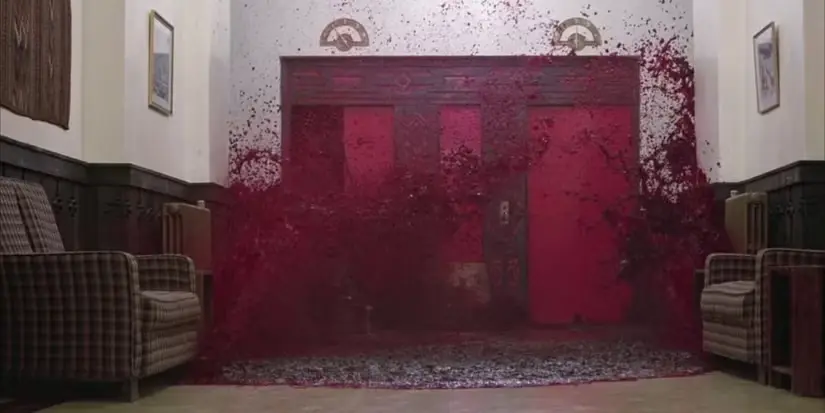
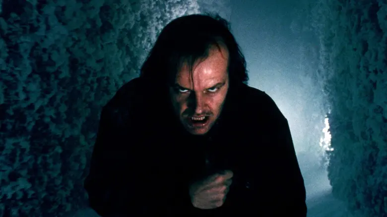
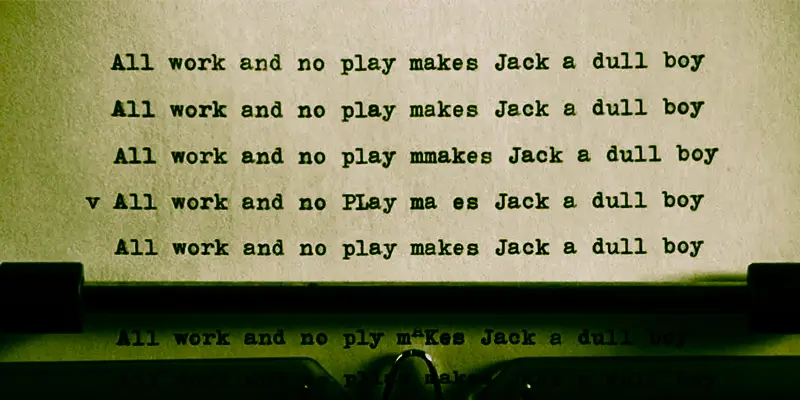
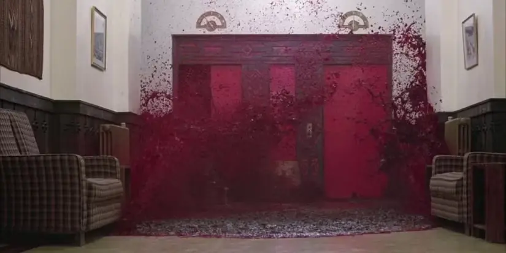
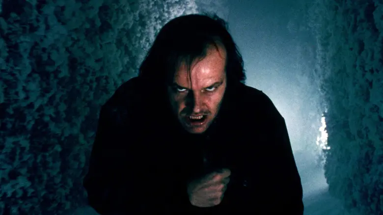
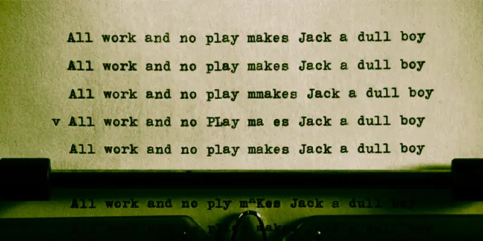
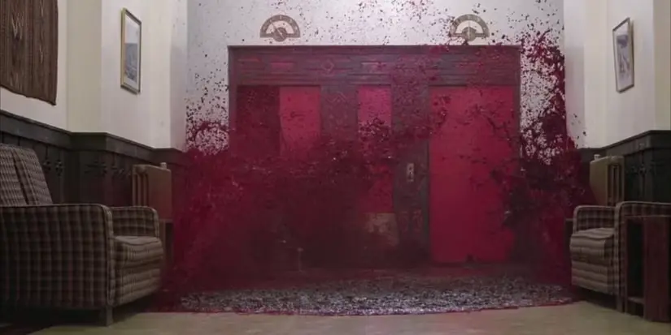
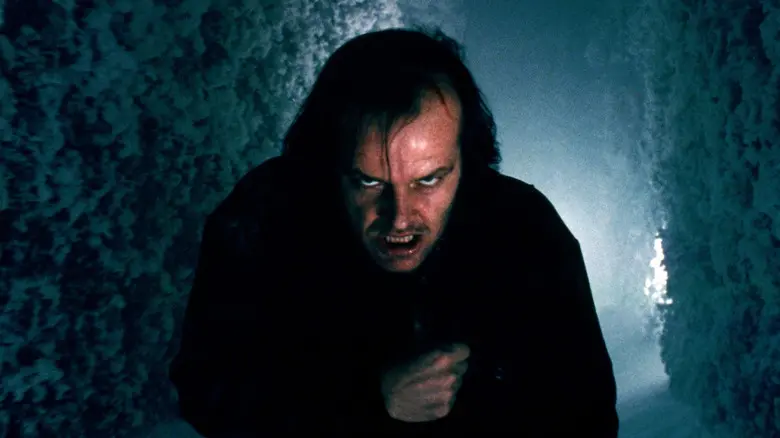
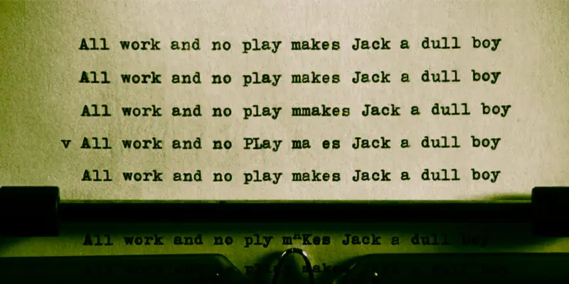

Behind the Screams
 





The Shining (1980) is a psychological horror film directed by Stanley Kubrick, based on Stephen King’s novel. It follows Jack Torrance, an aspiring writer who becomes the winter caretaker of the isolated Overlook Hotel with his wife Wendy and son Danny, who has psychic abilities called “the shining.” As the hotel’s malevolent forces influence Jack, he descends into madness, turning violently against his family. The film is renowned for its unsettling atmosphere, haunting imagery, and exploration of insanity and isolation.
Jack Torrance
Wendy Torrance
Danny Torrance
Dick Hallorann


